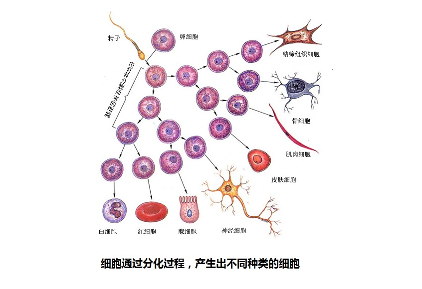
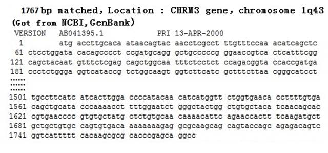

|
回主页
第9节 DNA的编码终结了进化论
全世界人的DNA序列极其的一致，完全否定了“随机发生、自然选择而形成进化”这些进化论的基本观念。各个物种内部所有个体的DNA序列，都是非常一致的。这是达尔文不可能想到的，也是现代进化论者最不愿意看到和最不想承认的科学事实。
总之，是DNA编码和解码终结了进化论，这是几十年来，数以万计的科学家辛勤劳动的成果，是数以亿计的金钱付出得到的结论。
一．我们都是DNA编码下的人
关于我们身体内的DNA编码，在以上的各节中已经讨论很多。由此，我们可以做一个总结了，这就是：我们都是DNA编码下的人。
1.我们体内的60亿DNA编码
现代生命科学研究发现，人类细胞中的DNA编码，是存储生命遗传信息的唯一载体。
生命遗传信息有两个方面的内容：“物质的遗传信息”和“非物质的遗传信息”。
一个人是从一个受精卵开始的，受精卵中有来自父亲的23条染色体，还有来自母亲的23条染色体和母亲的线粒体。女人比男人，只在于少了一个Y染色体，但是，却有双份的X染色体（参看第二节图2-1）。是这46条染色体和线粒体中包含的遗传信息，构成了我们各自的生理、体型和面貌。此外，每一个孩子从父母那里，不仅得到了身体，也获得了不能从肉体上看见的“非物质的遗传信息”。无论你对一个黑猩猩进行如何的教育和培养，你绝不可能使它达到小学生的听、说、读、写能力，取得小学的毕业文凭。这对于普通的人来说，是轻而易举的事情。这是为什么？除了人和黑猩猩体质的不同外，人还从父母那里得到了黑猩猩不具备的“非物质的遗传信息”。人类具有任何动物无法比拟的智慧，这些智慧虽然绝大多数来自于成长后的学习，但是学习和取得这些智慧的“能力”，绝对是在胚胎时期就已经具备了。既然“人类细胞中的DNA编码，是存储生命遗传信息唯一的载体”，那么“非物质的遗传信息”，也必然承载于DNA编码之上。
这些遗传信息是什么？那是来自父亲染色体中30亿DNA编码以及母亲染色体、线粒体中30亿DNA编码。在我们身体内的几十万亿个细胞中，每一个细胞内（除了精子细胞和卵子细胞），都有着这相同的60亿DNA编码。看起来，它们很像电脑软件的编码，不同的是DNA是4态码：A、T、C、G，电脑是2态码：0、1。人的DNA编码是60亿，因为是4态码，因此包含的信息量远远超过同等编码数量的2进制编码。
DNA的编码，决定了人体的一切特征。你细胞中的60亿DNA编码，编制出了你；我细胞中的60亿DNA编码，编制出了我。无论你、我来自非洲、亚洲或欧洲，在我和你各自的60亿编码中，序列是完全一致的，仅仅在千分之一的位点上字码有所不同。例如在某个点上你是‘A’，我是‘C’，就这样区分了我和你。从这些意义上来看，我们全部是DNA编码下的人。从全世界人的DNA序列那样一致，可以看到我们有共同DNA编码人的源头。
让我们来看一下我们的DNA中有多少信息：
信息量与编码可能形成的组合数目有关。对于相同编码数目的4态码和2态码，4态码能够形成的组合数目远远大于2态码的组合数目。如果编码的数目同样为N，可以用初中数学中指数运算方法，计算出4N可以化算为以2为底指数的相应数值：
4态码的组合数目 4N=(2×2)N= 2N×2N=22N
对于我们的DNA，考虑22对常染色体DNA的一致性（其实来自父、母双方的常染色体，各包含有不同的遗传信息。但这个DNA差别，占常染色体全部DNA的数量比例很小），那么人类DNA遗传信息至少由30亿的4态码构成。
仅仅一号常染色体就包含2.5亿的DNA编码，N=2.5亿。由此，可以换算出相应2态码组合数目：
4态码的组合数目4N =22N =25亿。
2的5亿次方是多少？您能回答吗？
一个流传很久的数学故事和我们讨论的问题有关。一位智慧的人向国王要求的奖赏仅仅是“在64格的棋盘上每个格倍增地存放米粒”：第一格放一粒米，以后每格依次加倍，直到第64格。国王满不在意，要求他计算。结果，仅仅是最后一格，就有1540亿吨米（263=9.2×1018粒的米，一亿粒米大约是 1.67 吨）。国王呆住了，即使把全国粮仓的米全部运来，还远不及这个数目的千分之一。
这里仅仅是2的63次方。上面一号常染色体2.5亿个4态码的组合包含的信息量，是2的5亿次方，就可以想象这是怎样一个天文数字了。人的DNA编码信息内容之浩瀚，实在令人惊叹。来自父亲的遗传信息，全部存储在每一个精子包含的23条染色体中，其编码总数有30亿左右的字符。这些有序的编码序列，承载着父系的全部遗传信息：包含“物质的遗传信息”和“非物质的遗传信息”。而每一个精子头部是那么小，在长、宽、高都只有3微米左右的空间内存储了这样巨量的信息，实在是超出我们的想象。
可以看到，我们身体中DNA编码包含的信息量是多么巨大，这也正是我们生命的无限奥秘所在。就如认识浩瀚无比的宇宙那样，认识我们体内的DNA编码包含的“物质的遗传信息”和“非物质遗传信息”，也将是一个遥远的、浩瀚无比的探索。这远远超出了进化论描述的那些浅薄的结论。
2.编码下的人体
46条染色体加上一个环形线粒体中的DNA编码，不是一堆DNA的碎片，而是有47个严格编制的DNA序列。这47个DNA编码序列就是47个DNA分子，全世界每一个人的、相应的DNA分子长度都是相同的。这47个DNA分子上，有2万多个基因。在每一个人47个DNA分子序列上，基因的数量、长度和排列的位置都完全相同。而且，在不同人的身上，每个基因的DNA序列，都有基本相同的编码。不同人基因编码的差异，大约是在每1千个位点上，有1到4个码的不同。这就是基因DNA编码的多态性（Single
Nucleotide Polymorphism─SNP）。然而，这恰恰说明了不同人基因编码，在1千个位点上，有996点以上的相同，SNP反证了人类基因DNA编码的一致。
我们知道形成WINDOWS程式的编码是’0’和’1’，当然不是这两个码无序的堆砌。一部DVD的电影，同样是’0’和’1’的编码组成，大约有30亿左右的编码。如果有两个电影的DVD光碟（Digital Video Disk），它们的放映时间一秒不差，音乐、对话、演员动作和场景画面都完全一样。两个光碟的区别，仅仅只是在画面不同的位置上，有时闪烁几个不同的一些小光点，这些小的光点所占的像素，只是画面的千分之一。那么，这两个光碟是来自同一个母碟？还是由两个不同厂家分别录制的呢？显然它们是由一个母碟复制出的两个光碟。人类DNA编码的一致，也可以比拟成来自同一个电脑的源程式（Source code）。
就像一部电影DVD那样，我们都是一套DNA编码编制出来的，这实在太奇妙了。你能想象吗？事实就是这样，除了来自父亲和母亲的60亿DNA编码，再没有其它的遗传信息了，这是一个科学事实。
全世界每一位女人，都有着表达自己的“DVD光碟（Digital
Video Disk）”，这些DVD光碟编码非常一致；全世界每一位男人，也都有着表达自己的“DVD光碟”，这些DVD光碟编码也非常一致。男人与女人的不同，在于男人多一条Y染色体，少了一条X染色体。这样的DNA编码差异，造就了男、女身体各自的特征部位，严格区分了男女的性别。男人和女人的22对常染色体以及线粒体编码却没有区别，表明人不是随机的、进化的产物。
3．DNA的严格复制机能
做电脑软件的人都知道，软件的编码是非常严格的，不允许一点点错误。在电脑软件不断的复制中，不允许出现差错。人的DNA编码也是这样的，在细胞分裂和一代代的生命遗传中，DNA的复制也是非常严格的。这些，我们在第2节第3页中已经讲述了。
让我们来看一段编码，Y染色体上ZFY基因编码（这是一个和男性特征有关的一个基因）：现在每一个男人身上都有这729个编码，而且，大家一字不差。由这个编码，推论出全世界的人有一个老老祖父：Y染色体亚当，这个编码也可以说是“亚当标记”（参看第2节）。
对于现代人20几万年的历史，这个编码已经复制（COPY）了上万代了。每一代人，由于细胞分裂，又复制了几十次。全世界有30几亿的男人，在上万代的遗传中，复制的次数难以估算。ZFY基因编码居然没有差错，DNA 复制的准确性令人惊叹。
和电脑程序不同的是，人的这个“源程序”在每一代人繁衍的复制中，甚至在体内每一批细胞的复制中，都安排了一点点的差别。这样，即使是同卵孪生的两个儿子，也能够加以分辩。20几万年来，全世界都不会有一个完全相同的人。这实在是最完美的编程方式。如此之奇妙，我们只能发出赞叹。
4．编码决定了人的生理、体型和外貌
细胞染色体和线粒体中的两万多个基因，决定了人的生理、体型和外貌，而基因又是编码所组成。让我们来看一个基因（CHRM3 gene毒蕈碱乙酰胆碱受体亚型3）的1767个字符的编码，这很像一个小的电脑子程序（见网页附录：基因银行的DNA编码资料）。如果这个“子程序”（subroutine）错了，人的神经系统就会出现病状。
两万多个基因相当两万多个子程序，它们指导着生命的成长。一个受精卵细胞核内的23对（46条）染色体的DNA，其中23条来自父亲、23条来自母亲。以后身体各部位，增殖出来的千千万万细胞核中，染色体的DNA都是一样的。受精卵从一个开始，进行有丝分裂，一个变两个，两个变4个，4个变8个等等。开始的这些细胞完全是一样地被复制出来。奇妙的是，进入分化阶段以后，细胞核DNA仍然是一样的，细胞质却变成各式各样的，形成了人身体中各个不同部位的细胞。

图9-1 细胞的分化过程
全世界人的基因DNA序列基本是一样的，只有千分之1到4的位点上字符有所不同。也就是说，这两万多个子程序的编码，基本相同。
气候、食物等外界因素的影响：虽然每个人在生长中，其细胞分化过程，会受到外界因素微小的影响，然而，却是DNA编码在主导和控制着细胞的分化过程。任何对细胞分化影响的外界因素，都是次要的和暂时的，因为外界因素并不能去改变DNA编码这唯一的遗传信息。因此，每个人生殖细胞（精原细胞或卵原细胞）染色体的DNA编码序列，才会和他（她）生命开始的（受精卵内）染色体的DNA编码序列，仅仅只有几百个DNA编码的差别（参看第2节，谁是线粒体夏娃的夫君?— 2. 奇妙的DNA修复功能）。这在60亿编码的总数中，是微不足道的。而且，这微小的改变也与外界因素无关。染色体和线粒体的DNA编码，这样极其“保真”的特性，证明在人类繁衍中，不存在任何“微进化”。气候等因素促使了“进化”和“微进化”，仅仅是没有依据的假想。
5．编码不可能随机形成
在前面，我们将人体比喻成男人和女人DNA的DVD光碟，现在，让我们再回到DNA编码上去。
如果男人的46条染色体去掉了Y染色体，女人去掉一条X染色体，剩下的45条染色体就没有区别了。在基因组的常染色体分类上，只有长度的区别，并按照长度依次编号。但是，绝没有男女染色体的差别。
还是让我们来看看CHRM3基因（CHRM3 gene）的1767个字符的编码。

图9-2 CHEM3 基因上的1767个DNA编码（部分）
在本网的附录中，列出了27个DNA人体样本编码，这些样本编码都是从美国NCBI的GenBank的数据库得到的。其中4个样本，是在1号常染色体上的基因CHRM3的编码。它们分别是1995年到和2005年被检验后，接受进入数据库的。这4个样本显示了这两个人在该基因上，有1767个编码完全相同。图9-2 显示了CHEM3 基因编码的一部分，详细的编码见附录。
4个人的1767个DNA编码完全相同意味着什么？按照在第6节中提出的“DNA四面体骰子一次抛掷理论”，它意味着这4个人是同一个祖先的后代。这个祖先，可以一直追溯到最早的源头，那起始的第一个人。
如果不是一个人，假定是随机产生的两个人，他们的DNA由于随机的作用，产生出1767个编码排序完全相同的两个序列。那么，我们要计算这个可能性有多少。使用第6节讲到的P公式，由于1767个编码的数量很大，计算的公式可以略去染色体长度的影响，产生的概率应该是：
P=1/4n=1/41767，可能性几乎为0。
（说明：上面的计算，采用了近似公式，忽略了染色体长度L的影响。如果计入L数值，概率还要小一些。）
可能会有人发出疑问，这4个人能否代表全世界的人？回答是：可以。为什么呢？科学家为了回答这个问题，已经检测过许多人的DNA全序列—基因组。其中，有1092个人和92个人的研究报告（参看第6节），他们的结论都是一致的：常染色体的多态性仅仅是千分之1.2，即每1000个位点上，平均仅仅只有1.2点的差异。
另外，许多研究者做了关于不同基因多态性（SNP）的大量研究，在不同人群的基因编码上，寻找DNA编码的差别。由DNA编码的差别，去寻找个别编码的变化和遗传疾病的关系。大量的研究结果表明，全世界人基因编码的多态性，平均在一千个编码上，有1到2个点的差别（占DNA 93%的非基因的编码序列差异更小）。“多态性”的研究本身就是建立在DNA编码基本一致的基础上。例如，1000个DNA编码，如果有200个编码的差异，根本就无法进行“多态性(SNP)”研究。
在附录的基因银行的DNA编码资料中，给出了第20号常染色体上的7个人的血栓调节蛋白(Thrombomodulin)基因DNA编码序列，在样本的2494个DNA编码上，相互之间只有一个编码的差别，其SNP只有1/2500。附录中全部人的样本平均SNP大约是千分之0.5。
如果考虑附录中全部8个常染色体上的标记，这个随机产生的概率更加小得惊人了。编码的总数有9825，可以合并计算的概率为：
P= P0
×P1 ×P2×P3×P4×P5×P6 ×P7=4-789×4-2494×4-1767×4-506×4-1099×4-1327×4-1125 ×4-718=4-9825 （P0是1号常染色体上的“第一标记”）
这个概率十进制表达为：P=0.00……001 （之间有5914个0）
按照这个数据，随机产生的可能性，几乎就为零了。请不要忘记，由于没有编码例外情况存在，还必须一次就随机产生这样的结果，那更是万万万不可能了。何况，这仅仅是基因组中很小很小的一部分。
这些样本来自不同的年代、不同的研究人员和国家，为什么编码是这样一致呢？这显然不是随机进化形成。
结论是：全世界人的DNA编码序列，只可能来自一个原始的编码序列，其他任何人的编码序列，只可能是这原始编码序列的复制品。因为，全世界人的DNA编码序列的极其一致，完全否定了随机产生这样DNA编码序列的可能性。
另外，从不同人体染色体的样本上可以看到，生殖过程减数分裂中的“联会”因素，并没有破坏常染色体上DNA序列的一致性。虽然在“联会”过程中，父母双方的DNA编码有所交换，但是，仍然使DNA编码序列的差异，保持在很小的范围。
按照新的进化论解释：生物的演化，纯粹是基因DNA随机突变的结果。因为基因DNA突变的结果有好、有坏，是自然选择决定进化方向。然而，上面给出的编码，可能是随机产生的吗？非洲、欧洲和亚洲的族群在分离以后，各在自己的遗传线上经历了几千上万代的繁衍，全世界现代人DNA编码却如此的一致，任何有正常思维的人，都不会同意这是“随机”产生的结果。
可以看出，进化论者往往不是依据科学的数据，而更多的是按照“进化的模式”去臆断、思考，当然，结论也是经不起推敲的。
6.全世界的人出自一位男子
从男性的Y染色体的ZFY基因的729个编码，追朔出Y染色体亚当。从线粒体DNA的16569个编码，追朔出了线粒体夏娃。那么，从常染色体上的基因CHRM3的1767个编码以及其它编码，我们应该可以得出一个结论：全世界的男人和女人的常染色体，都来源于这个“起始的个体”。随机地产生另一个相同的1767个编码序列，是完全不可能的，何况还有总数为9825个编码组成的序列的支持。也不要忘记在你身上的60亿DNA编码序列，和任何一位其他的人，都只有千分之1.2左右的差别。
由此，从常染色体上这1767个相同编码以及其它编码的序列，追朔出全世界人源自唯一的一个“起始的个体”，他既属于男人、也属于女人，这是因为男人和女人的常染色体都是一样的。
下面要问：这个“起始的个体”是男人还是女人？因为只有男人包含了全套的染色体：22条的常染色体，一个Y染色体，一个X染色体和线粒体。因此，可以推论出：他是一个男人。
结论是：全世界的人，都出于一个男人，这是基于纯科学得出的结论。
这个结论太令人震撼了。然而，从NCBI的GenBank中取得的编码序列是错误的吗？那个公认的概率理论是错误的吗？如果否定不了这两个基点，也就无法否定这个结论。要想否定这个结论，必须先否定这两个基点。显然，概率理论是无法否定的。相信美国NCBI的专家们，也不会认为他们的DNA编码序列是不可信的。
NCBI的GenBank中的编码，是20几年来成千上万科学家劳动的成果。是许多国家纳税人，用数以亿计资金堆砌的结果。库中现代人DNA的编码资料，全都呈现极其一致的序列。这些序列，也存在于你和我的细胞核之中，这些能够被否定吗？
达尔文曾经说过：“徜使能证明有任何复杂器官不是经过无数的、连续的、轻微的变异形成的，那么我的学说就要完全破产。但是，我还没有发见这种情形。”。当生物染色体数目的差异被发现以后，已经宣告了达尔文学说的破产。
我们要在这里说：“徜使能证明世界上现代人中，有某些族群，他们的DNA编码和我们有大的差别，而且没有上述的序列，那么我们的学说就要完全破产。但是，在已知的各族群几百万的DNA样本中，没有发见这种情形。”。
|